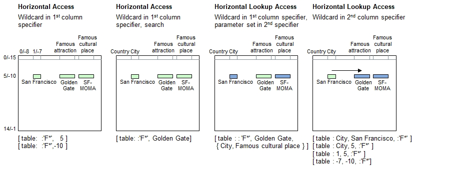

Introduction
Alternatively to parameter sets, wildcards can be specified using softquoted strings (i.e. with Text inside single quotation marks) to compare the header row and pick up all matches. A leading colon (:) is required to instruct B4P to search the table for matching contents. All headers matching to the string pattern will be included in the selecction.
Syntax for Full Table Specification
The header name patterns must begin with a colon (2 consecutive colons are actually needed if the table name specified before), followed by the softquoted string value.
| [ | Table Name | : | : Header Name Pattern | , | Simple Row Specifier | ] |
|---|---|---|---|---|---|---|
| Must be a string | - Must be a softquoted | - Matching contents (string), or | ||||
| string, recommended to use | - Positive row number, or | |||||
| wildcard symbols | - Negative row number |
Syntax for lookup access (Choose column, followed by the row, and pick up data from a different column):
| [ | Table Name | : | Simple Column Specifier | , | Simple Row Specifier | , | : Header Name Pattern | ] |
|---|---|---|---|---|---|---|---|---|
| Must be a string | - Header name, or | - Matching contents (string), or | - Must be a softquoted | |||||
| - Positive column number, or | - Positive row number, or | string, recommended to use | ||||||
| - Negative column number | - Negative row number | wildcard symbols |
Lookup access: If a parameter set or a header name pattern is encountered in the Simple Column Specifier instead of a simple value (string or numeral), then the 1st column found will be used to identify the row. If it contains no elements, then no lookup can be made and an empty set will be returned.
Principle

Programming examples
table load( table, "Examples\Cities.csv");
echo( [ table: :'F*', 5 ] ); // 2 matches: looks for headers starting with "F*"
echo( [ table: :'F*', -10 ] ); // Same result
echo( [ table: :"F*", 5 ] ); // No match. Qquoted string, looks for header name "F*"
echo;
echo( [ table: :'F*', Golden Gate] ); // Golden Gate is 1st match
echo( [ table: :'F*', SFMOMA] ); // SFMOMA is not 1st match, empty set returned
echo;
echo( [ table : : 'F*', Golden Gate, { City, Famous cultural place } ] );
echo;
echo( [ table : City, San Francisco, :'F*' ] );
echo( [ table : City, 5, :'F*' ] );
echo( [ table : 1, 5, :'F*' ] );
echo( [ table : -7, -10, :'F*' ] );
echo( "Output entire row with wildcards:");
echo( [ table : :'*', 5 ] );
Output - Forgot to recommend Fisherman's Wharf
{'Golden Gate','SFMOMA'}
{'Golden Gate','SFMOMA'}
{}
{'Golden Gate','SFMOMA'}
{'',''}
{'San Francisco','SFMOMA'}
{'Golden Gate','SFMOMA'}
{'Golden Gate','SFMOMA'}
{'Golden Gate','SFMOMA'}
{'Golden Gate','SFMOMA'}
Output entire row with wildcards:
{'USA','San Francisco','California',805000,'Golden Gate',16,'SFMOMA','Cable car'}